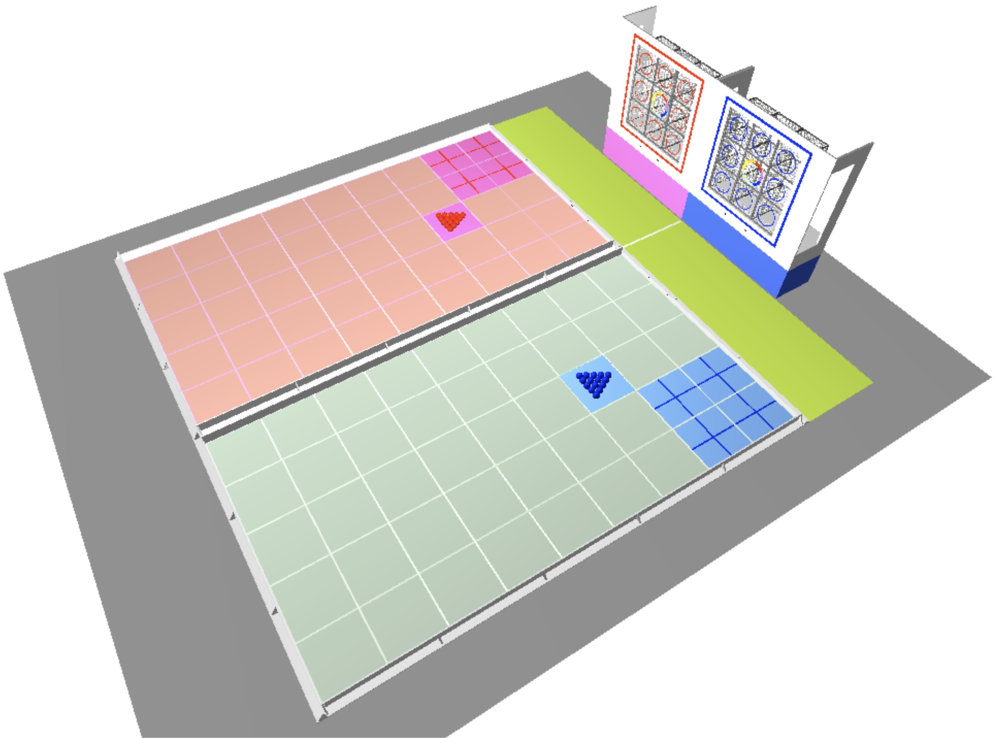
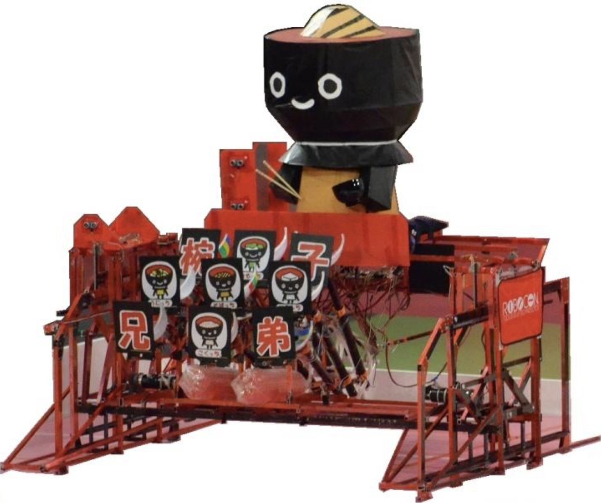
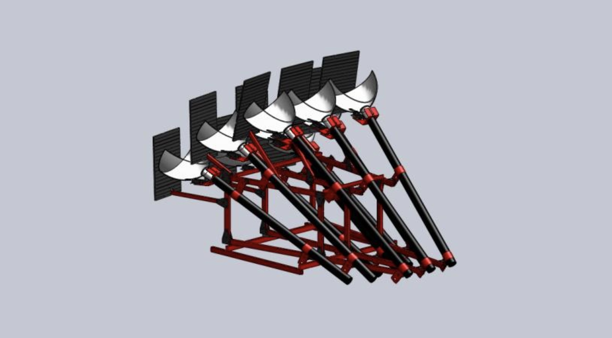
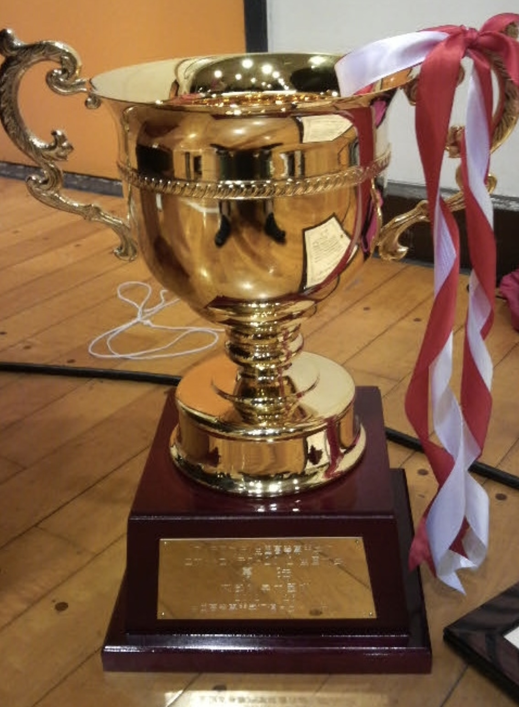

KOSEN Robocon 2012
Wanko Kyodai · National Champion
Designing and refining a ball-launching mechanism for a walking robot in Japan's national KOSEN robotics competition.
The final match
The challenge
- Team
- Wanko Kyodai (椀子兄弟)
- Institution
- Ichinoseki National College of Technology
- My role
- Ball-launching mechanism
Under the theme Best Pet, a red team and a blue team each competed with one pet robot and one human runner. For the first time in KOSEN Robocon, the robots competed without controllers.
Before the match, each opponent scattered 15 balls, including three rainbow balls, with a break shot. Runners collected the balls and passed them to their robots, which aimed for nine goals. The robots also had to express joy when receiving a ball.
Rainbow goals were worth four points and required rainbow balls. A perfect score was 15 points through the quarterfinals (two rainbow goals), and 18 points in the semifinals and final (three rainbow goals).

Our robot: Wanko Kyodai
Our team built a walking robot to receive balls from its human partner and place them into the goals. The challenge was to combine locomotion, human–robot coordination, and reliable mechanical execution.


My contribution
I was responsible for the ball-launching mechanism, from mechanical design and fabrication to experimental testing and iterative improvement.
- Design: Develop the launching mechanism.
- Fabrication: Build the physical mechanism.
- Testing and refinement: Evaluate its performance and improve the design through repeated experiments.

Results
Our team won the 2012 KOSEN Robocon National Championship. Our robot completed all nine goals in every match.

Competition rules and results — official KOSEN Robocon website (Japanese)